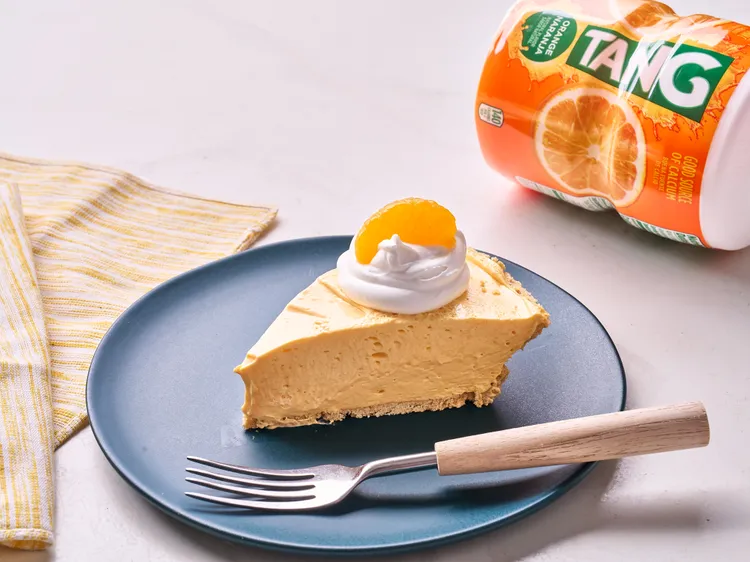

Home
Tang Pie

Description
Creamy no-bake tang pie takes the drink mix of astronauts and turns it into a fun dessert. It is easy to make and can be served cold or frozen for a yummy refreshing treat. Tang powder mixes with cream cheese, condensed milk, and whipped topping to make this super silky no bake pie. It is cool and creamy with citrus from the tang and a bit of vanilla from the condensed milk, so it almost tastes like a dreamsicle in pie form.
Ingredients
- Orange-Flavored drink mix
- Sweetened condensed milk
- Cream Cheese
- Graham Cracker Crust
- Frozen Whipped Topping
- Mandarin Orange
Steps
- Combine orange drink mix, condensed milk, and cream cheese in a large bowl. Beat with an electric mixer on high speed until well combined. Fold 2 cups whipped topping into cream cheese mixture.
- Pour mixture into graham cracker crust and chill until firm, at least 1 hour. Garnish with remaining whipped topping and mandarin orange segments.